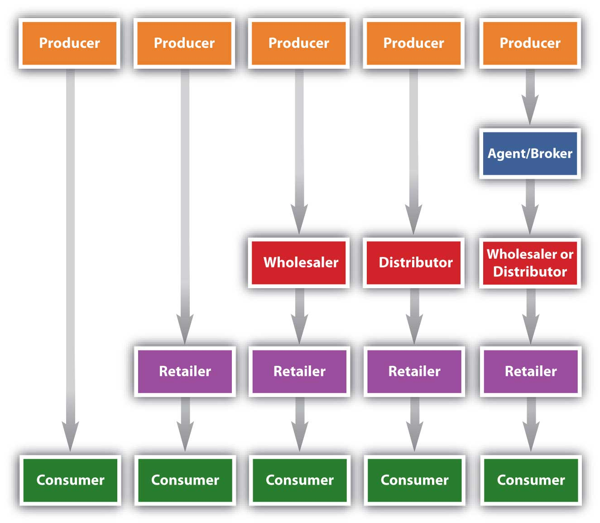
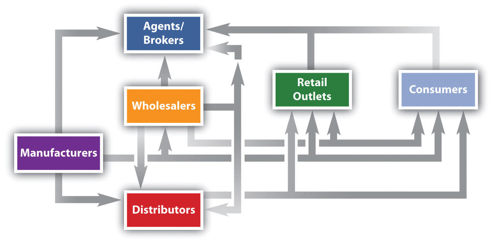

Figure 8.4 "Typical Channels in Business-to-Consumer (B2C) Markets" shows the typical channels in business-to-consumer (B2C) markets. As we explained, the shortest marketing channel consists of just two parties—a producer and a consumer. A channel such as this is a direct channelA marketing channel that consists of a producer and a consumer.. By contrast, a channel that includes one or more intermediaries—say, a wholesaler, distributor, or broker or agent—is an indirect channelA marketing channel that consists of a producer, a consumer, and one or more intermediaries.. In an indirect channel, the product passes through one or more intermediaries. That doesn’t mean the producer will do no marketing directly to consumers. Levi’s runs ads on TV designed to appeal directly to consumers. The makers of food products run coupon ads. However, the seller also has to focus its selling efforts on these intermediaries because the intermediary can help with the selling effort. Not everyone wants to buy Levi’s online.
Figure 8.4 Typical Channels in Business-to-Consumer (B2C) Markets
Figure 8.5 Typical Channels in Business-to-Business (B2B) Markets

Figure 8.5 "Typical Channels in Business-to-Business (B2B) Markets" shows the marketing channels common in business-to-business (B2B) markets. Notice how the channels resemble those in B2C markets, except that the products are sold to businesses and governments instead of consumers like you. The industrial distributorsIntermediary firms that sell products that businesses or government departments and agencies use but don’t resell. shown in Figure 8.5 "Typical Channels in Business-to-Business (B2B) Markets" are firms that supply products that businesses or government departments and agencies use but don’t resell. Grainger Industrial Supply, which sells tens of thousands of products, is one of the world’s largest industrial distributors. Nearly two million businesses and institutions in 150 countries buy products from the company, ranging from padlocks to painkillers.
You might be tempted to think middlemen, or intermediaries, are bad. If you can cut them out of the deal—a process marketing professionals call disintermediationA situation that occurs when intermediaries are cut out of marketing channels.—products can be sold more cheaply, can’t they? Large retailers, including Target and Walmart, sometimes bypass middlemen. Instead, they buy their products directly from manufacturers and then store and distribute them to their own retail outlets. Walmart is increasingly doing so and even purchasing produce directly from farmers around the word.Jonathan Birchall, “Walmart Aims to Cut Supply Chain Cost,” Financial Times, January 4, 2010, 4. However, sometimes cutting out the middleman is desirable but not always. A wholesaler with buying power and excellent warehousing capabilities might be able to purchase, store, and deliver a product to a seller more cheaply than its producer could acting alone. Walmart doesn’t need a wholesaler’s buying power but your local In ‘n Out convenience store does. Likewise, hiring a distributor will cost a producer money. But if the distributor can help the producer sell greater quantities of a product, it can increase the producer’s profits. Moreover, when you cut out the middlemen you work with, you have to perform the functions they once did. Maybe it’s storing the product or dealing with hundreds of retailers. More than one producer has ditched its intermediaries only to rehire them later because of the hassles involved.
The trend today is toward disintermediation. The Internet has facilitated a certain amount of disintermediation by making it easier for consumers and businesses to contact one another without going through any middlemen. The Internet has also made it easier for buyers to shop for the lowest prices on products. Today, most people book trips online without going through travel agents. People also shop for homes online rather than using real estate agents. To remain in business, resellers need to find new ways to add value to products.
Figure 8.7
Be glad you’re not the owner of this parking lot because it’s going to need a lot of cleanup. This Nationwide Insurance ad drives home the point that close personal contact with your insurance agent might be a good idea.
Source: Courtesy of Nationwide, used with permission.
Figure 8.8
Michael Dell, founder of the worldwide corporation Dell, Inc., initially made and sold computers to buyers by telephone out of his college dorm room.
Source: Courtesy of Dell, Inc., used with permission.
However, for some products, disintermediation via the Internet doesn’t work so well. Insurance is an example. You can buy it online directly from companies, but many people want to buy through an agent they can talk to for advice.
Sometimes it’s simply impossible to cut out middlemen. Would the Coca-Cola Company want to take the time and trouble to personally sell you an individual can of Coke? No. Coke is no more capable of selling individual Cokes to people than Santa is capable of delivering toys to children around the globe. Even Dell, which initially made its mark by selling computers straight to users, now sells its products through retailers such as Best Buy as well. Dell found that to compete effectively, its products needed to be placed in stores alongside Hewlett-Packard, Acer, and other computer brands.Kenneth L. Kraemeer and Jason Dedrick, “Dell Computer: Organization of a Global Production Network,” Center for Research on Information Technology and Organizations, University of California, Irvine, 2008, http://escholarship.org/uc/item/89x7p4ws#page-2 (accessed April 13, 2012).
Marketing channels can get a lot more complex than the channels shown in Figure 8.4 "Typical Channels in Business-to-Consumer (B2C) Markets" and Figure 8.5 "Typical Channels in Business-to-Business (B2B) Markets", though. Look at the channels in Figure 8.9 "Alternate Channel Arrangements". Notice how in some situations, a wholesaler will sell to brokers, who then sell to retailers and consumers. In other situations, a wholesaler will sell straight to retailers or straight to consumers. Manufacturers also sell straight to consumers, and, as we explained, sell straight to large retailers like Target.
Figure 8.9 Alternate Channel Arrangements
The point is that firms can and do utilize multiple channels. Take Levi’s, for example. You can buy a pair of Levi’s from a retailer such as Kohl’s, or you can buy a pair directly from Levi’s at one of the outlet stores it owns around the country. You can also buy a pair from the Levi’s Web site.
The key is understanding the different target markets for your product and designing the best channel to meet the needs of customers in each. Is there a group of buyers who would purchase your product if they could shop online from the convenience of their homes? Perhaps there is a group of customers interested in your product but they do not want to pay full price. The ideal way to reach these people might be with an outlet store and low prices. Each group then needs to be marketed to accordingly. Many people regularly interact with companies via numerous channels before making buying decisions.
Using multiple channels can be effective. At least one study has shown that the more marketing channels your customers utilize, the more loyal they are likely to be to your products.Michele Fitzpatrick, “The Seven Myths of Channel Integration,” Chief Marketer, October 1, 2005, http://chiefmarketer.com/multi_channel/myths_integration_1001 (accessed December 12, 2009). Companies work hard to try to integrate their selling channels so users get a consistent experience. For example, QVC’s TV channel, Web site, and mobile service—which sends alerts to customers and allows them to buy products via their cell phones—all have the same look and feel.
A company can also use a marketing channel to set itself apart from the crowd. Jones Soda Co. initially placed its own funky-looking soda coolers in skate and surf shops, tattoo and piercing parlors, individual fashion stores, and national retail clothing and music stores. The company then began an up-and-down-the-street “attack,” placing product in convenience and food stores. Finally, the company was able to sell its drinks to bigger companies like Starbucks, Barnes & Noble, Safeway, Target, and 7-Eleven stores.“About Jones Soda Co.,” JonesSoda.com, http://www.jonessoda.com/company/about-us (accessed April 13, 2012).
Would you like to purchase gold from a vending machine? Soon you will be able to—in Germany. Germans like to purchase gold because it’s considered a safe alternative to paper money, which can become devalued during a period of hyperinflation. So, in addition to selling gold the usual way, TG-Gold-Super-Markt company is planning to install “gold to go” machines in five hundred locations in German-speaking countries. The gold is dispensed in metal boxes, and cameras on the machine monitor the transactions to prevent money laundering.James Wilson and Javier Blas, “Machines with Midas Touch Swap Chocolate for Gold Bars,” Financial Times, June 17, 2009, http://www.jonessoda.com/company/about-us (accessed April 13, 2012).
Gold to Go: Germany’s Version of an ATM Machine?
http://www.youtube.com/v/eRa0Mnd93wECheck out this YouTube clip to get a look at how a gold vending machine works.
Some companies find ways to increase their sales by forming strategic channel alliancesAn agreement formed by two or more firms to deliver their products via a channel. The products and organizations can be similar or different. with one another. Harley-Davidson has a strategic channel alliance with Best Western. Click on Harley-Davidson’s “Ride Planner” tab on its Web site, and you can sign up to receive points and other discounts by staying at Best Western hotels and motels.Cristene Gonzalez-Wertz, “Ten Examples of Smarter Customer Focus” (blog), WordPress.com, February 11, 2009, http://museandmaven.wordpress.com/2009/02/11/10-examples-of-smarter-customer-focus (accessed December 12, 2009). Starbucks now dispenses its beverages in some of Safeway’s grocery stores. Starbucks wants grocery shoppers at Safeway craving a cup of coffee to grab one; Safeway hopes customers dropping in for a Starbucks cup of coffee will buy some grocery products.
Consumer and business markets in the United States are well developed and growing slowly. However, the opportunities for growth abound in other countries. Coca-Cola, in fact, earns most of its income abroad—not in the United States. The company’s latest push is into China, where the per-person consumption of ready-to-drink beverages is only about a third of the global average.Patt Waldmeir, “Coca-Cola in New China Push,” Financial Times, March 7, 2009, 10.
The question is how to enter these markets? Via what marketing channels? Some third-world countries lack good intermediary systems. In these countries, firms are on their own in terms of selling and distributing products downstream to users. Other countries have elaborate marketing channels that must be navigated. Consider Japan, for example. Japan has an extensive, complicated system of intermediaries, each of which demands a cut of a company’s profits. Carrefour, a global chain of hypermarkets, tried to expand there but eventually left the country because its marketing channel system was so complicated.
Walmart managed to develop a presence in Japan, but only after acquiring the Japanese supermarket operator Seiyu.Matthew Boyle, “Walmart’s Painful Lessons,” BusinessWeek, October 13, 2009, http://www.businessweek.com/managing/content/oct2009/ca20091013_227022.htm (accessed December 12, 2009). As you learned in Chapter 2 "Strategic Planning" and Chapter 5 "Market Segmenting, Targeting, and Positioning", acquiring part or all of a foreign company is a common strategy for companies. It is referred to as making a direct foreign investment. However, as you learned some nations don’t allow foreign companies to do business within their borders or buy local companies. The Chinese government blocked Coca-Cola from buying Huiyuan Juice, that country’s largest beverage maker.
Corruption and unstable governments also make it difficult to do business in some countries. The banana company Chiquita found itself in the bad position of having to pay off rebels in Colombia to prevent them from seizing the banana plantations of one of its subsidiaries.
One of the easier ways of utilizing intermediaries to expand abroad is a joint venture. You first learned about joint ventures in Chapter 2 "Strategic Planning". A joint venture is an entity created when two parties agree to share their profits, losses, and control with one another in an economic activity they jointly undertake. The German automaker Volkswagen has struggled to penetrate Asian markets. It recently signed an agreement with Suzuki, the Japanese company, in an effort to challenge Toyota’s dominance in Asia. Will it work? Time will tell. Many joint ventures fail, particularly when they involve companies from different countries. Daimler-Chrysler, the union between the German car company and U.S. automaker Chrysler, is one of many joint ventures that fell by the wayside.Daniel Shafer, “Asia Is Final Frontier for VW Empire,” Financial Times, December 10, 2009, 17. However, in some countries, such as India, it is the only way companies are allowed to do business within their borders.
An even easier way to enter markets is to simply export your products. Microsoft hasn’t done well with its Zune MP3 player in the United States. It subsequently redesigned the product and launched it in other countries.Tim Bradshaw, “Zune to Launch Outside U.S.,” Financial Times, November 16, 2009, http://www.ft.com/cms/s/0/76f98ae8-d205-11de-a0f0-00144feabdc0.html (accessed December 11, 2009). Companies can sell their products directly to other firms abroad, or they can hire intermediaries such as brokers and agents that specialize in international exporting to help them find potential buyers for their products.
Recall that many companies, particularly those in the United States, have expanded their operations via franchising. Franchising grants an independent operator the right to use a company’s business model, name, techniques, and trademarks for a fee. McDonald’s is the classic example of a franchise. Unlike Walmart, McDonald’s has had no trouble making headway in Japan. It has done so by selling thousands of franchises there. In fact, Japan is McDonald’s second-largest market next to the United States. The company also has thousands of franchises in Europe and other countries. There is even a McDonald’s franchise in the Louvre, the prestigious museum in Paris that houses the Mona Lisa. Licensing is similar to franchising. For a fee, a firm can buy the right to use another firm’s manufacturing processes, trade secrets, patents, and trademarks for a certain period of time.
A direct marketing channel consists of just two parties—a producer and a consumer. By contrast, a channel that includes one or more intermediaries (wholesaler, distributor, or broker or agent) is an indirect channel. Firms often utilize multiple channels to reach more customers and increase their effectiveness. Some companies find ways to increase their sales by forming strategic channel alliances with one another. Other companies look for ways to cut out the middlemen from the channel, a process known as disintermediation. Direct foreign investment, joint ventures, exporting, franchising, and licensing are some of the channels by which firms attempt to enter foreign markets.